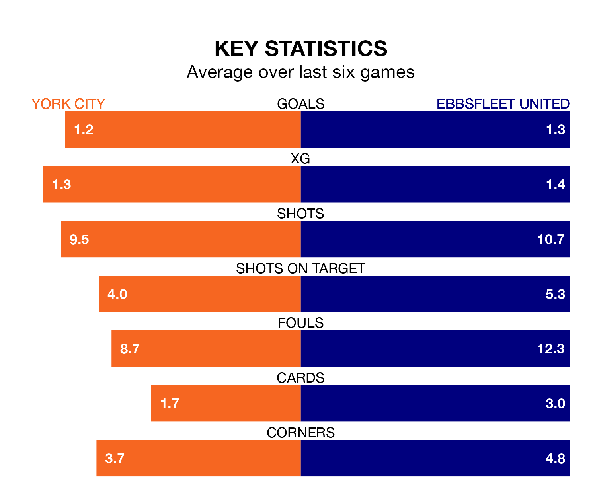

York City host Ebbsfleet United on Saturday at the LNER Community Stadium in National League.
In their last league match, on December 16, York drew with Rochdale 0-0 away.
Ebbsfleet also drew, 1-1 at home against Barnet, with Ben Coker (own goal) scoring their goals.
Ebbsfleet are 21st in the table after 24 games, of which they have won six and drawn five, earning 23 points.
York are one place ahead of United in 20th, with five wins and nine draws putting them on 24 points.
With 31 goals in 24 games so far this season, the away team are scoring at below the league average rate with 1.3 goals per game. And they are conceding more than average, letting in 45 goals at a rate of 1.9 per game.
City are also below average scorers, with 1.3 goals per game, compared to a league average of 1.5. They have conceded 1.8 goals per game.
The hosts are in mixed form in National League, with two wins and three draws from their last six games.
With a win and three draws over that period, Ebbsfleet's form is worse – they have taken six points from 18, compared to York's nine.
